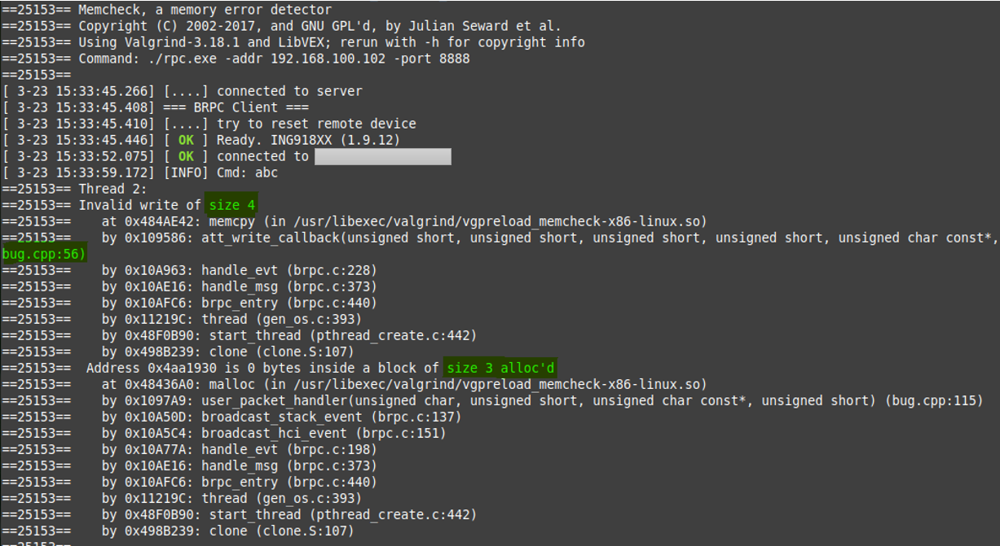
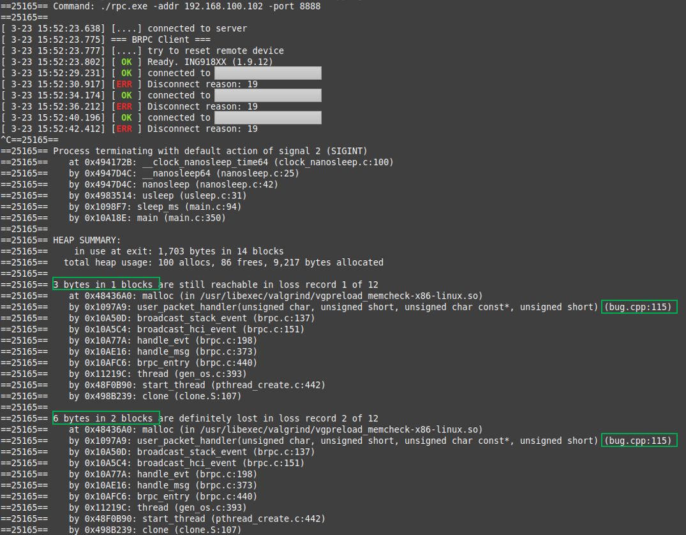

之前介绍了代码的静态分析，现在再来看程序的动态分析。 动态代码分析是通过在程序运行期间或之后检查应用程序进行调试的方法。在嵌入式领域，仿真或者在线调试是两种常见的动态分析调试方法， 通过设置 复杂的断点 有可能精准定位“事故”现场。
有一些内存问题不会立即暴露，需要积累一段时间，再呈现出毫不相干的现象。这类问题虽不易通过仿真或者在线调试定位。 有一些对于这一类问题的通用工具，比如适用于 Linux/Android/MacOS 的 Valgrind。 由于绝大部分蓝牙相关的功能可以直接（或者稍加修改）以 RPC 客户端的形式运行于 Linux，我们也可以使用这个 Valgrind。 Valgrind 是用来构建动态分析工具的框架。包含多种工具：
-
Memcheck：检查程序中的内存问题，如泄漏、越界、非法指针等，主要针对 C/C++ 程序；
-
Cachegrind：监测和分析 Cache 性能，辅助代码优化；
-
Massif：堆性能的监测和分析；
-
Helgrind：为多线程程序检测数据竞争；
-
……
这里主要使用 Memcheck 工具。使用 Valgrind 这一类检测工具（instrumentation tools）时， 被测程序的运行速度显著变慢。由于 PC 的速度远远比嵌入式 MCU 快，Valgrind 导致的“变慢”影响不大。
将程序转换为 RPC 客户端
目前，RPC 客户端可以调用所有的蓝牙 API，若干 platform API，但不支持操作外设。所以需要采取一些方法脱离外设，比如：
-
使用 GPIO 驱动 LED 指示灯：改为
printf或者图形界面； -
输出 PWM：改为
printf或者删除； -
使用 GPIO 中断触发动作：改为从终端输入指令或者使用图形界面；
-
使用 SPI 与其它芯片通信：删除相关功能，并模拟必要流程。
客户端程序的主入口为熟悉的 setup_profile 函数。如果转换后的程序包含多个模块，则需要修改 makefile，
将各模块添加到 PROJECT_FILES；如果仅有一个模块，则不需要修改 makefile。
RTOS 的处理
如果程序里使用了 RTOS 的相关功能，存在三种情况：
-
只使用了通用 RTOS 接口（
gen_os_driver_t）里的功能platform_get_gen_os_driver仍然可用，代码无需修改。 -
使用了 FreeRTOS
FreeRTOS 提供了 Linux 上的模拟器， 代码也无需修改，只需要在编译时带上
FreeRTOS=1参数即可。 当然，其运行效果与嵌入式上的实际情况存在较大差异。 -
使用了其它的 RTOS
需要检查是否提供了 Linux 上的模拟器，并添加到 RPC 客户端。
测试
现假设转换得到了一个 bug.cpp 的模块， 将它放到 rpc_client/app 目录下，在 Linux 系统里使用下面的命令编译它：
make rebuild app=bug
Valgrind 的设置
bug.cpp 是一直执行的，测试时使用 Ctrl+C 强制退出，因此必然存在一些分配了但未释放的内存，
需要为 Valgrind 编写 suppression 文件忽略这些问题，
如 rpc.supp
里的这一段内容表示告诉 Memcheck 工具忽略 FreeRTOS vTaskStartScheduler 泄露的内存：
{
start up
Memcheck:Leak
...
fun:vTaskStartScheduler
fun:main
}
运行 Memcheck 工具：
valgrind --tool=memcheck --leak-check=full --show-leak-kinds=all \
--suppressions=rpc.supp --suppressions=app.supp \
./rpc.exe -addr XX.XX.XX.XX
Bug 1：写溢出
使用 ING BLE 连接到名为 shell 的设备，发送 3 个字符“abc”，Valgrind 立即报告内存写溢出： bug.cpp 于第 115 行分配了 3 个字节的储存空间，但是在第 56 行却要写入 4 个字节，如图。

Bug 2：内存未释放
重新运行 Valgrind，连接到设备然后断开，重复 3 次，Ctrl+C 强制退出，Valgrind 报告发现 bug.cpp 第 115 行分配过的 2 块共 6 个字节内存已不可达，无法释放，如图。

总结
借助 Valgrind 能够高效地发现特定类型的内存问题 —— 以转换为 RPC 客户端为代价。